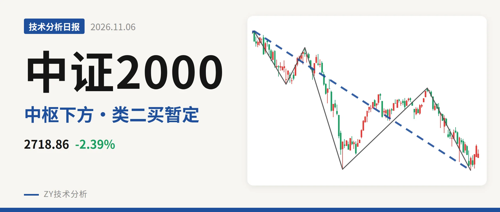
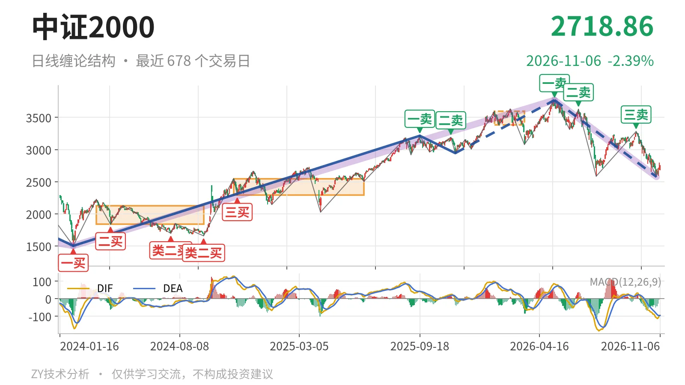
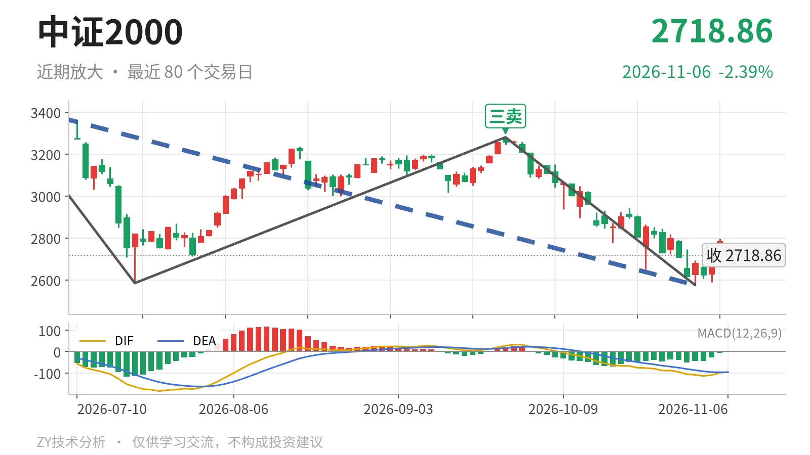

中证2000｜反弹未触及3381 三卖后延续

最近日线中枢 3381.36—3593.19点，收盘位于中枢之下
一句话：最新价2718.86点仍低于日线中枢下沿，5月14日以来下跌段未结束。
📉 走势结构：更大级别上涨中的日线下跌段未结束
前一段2025年11月21日至2026年5月14日的上涨线段已在3768.08点结束，5月14日以来的日线下跌段还在延续。11月6日收于2718.86点，仍在该下跌段中。该下跌段从3768.08点至2576.02点，累计下跌约31.6%，内含5笔，当前没有结束。更大级别看，2024年2月6日至2026年5月14日的上涨段还在延续，5月14日以来的下跌只是其中一段回调；但这段回调的线段内部，9月22日至11月2日下跌笔结束后，11月3日至11月6日只有4根K线，最高2798.18点、最低2590.63点，尚未构成反向日线笔，因此下跌段不能判定终结。日线MACD的DIF为-95.2、DEA为-96.0，仍在零轴之下，柱值仅1.7，说明日线动能尚未转强。

🧭 中枢与位置：跌破最近中枢下沿，仍未收回
最近一个日线笔中枢在1月26日至3月23日形成，区间为3381.36—3593.19点，尚未完成。最新收盘2718.86点低于该中枢下沿，幅度约19.6%。这个中枢较2024年11月12日至2025年6月23日的中枢2293.12—2547.90点明显上移，但中枢本身没有下移，只是价格跌到了中枢下方。9月22日三卖所在反弹笔的高点3280.29点，当时就未触到3381.36点下沿；现在价格仍在该下沿下方，说明离开中枢后没有形成有效回拉。
🎯 买卖点：三卖之后暂定类二买，结构层级要分清
日线笔级别的卖点呈一个比一个低：5月14日一卖3768.08点、6月23日二卖3626.48点、9月22日三卖3280.29点。9月22日三卖已经确认，随后价格跌至2576.02点附近，出现11月2日的线段级别类二买2576.02点；但这个类二买所在的5月14日至11月2日下跌线段还没有结束，因此只能视为暂定的类二买，会随该线段的延续而变化。日线笔级别在2576.02点之后没有新的买点，11月3日以来只是未成笔的反弹，不构成新的结构买点。

📊 背驰：最后一组下跌笔出现DIF抬高，未确认背驰
比较同向的日线下跌笔：6月23日至7月21日一笔从3626.48点跌到2585.35点，跌幅约28.7%，绿柱面积810，DIF低点-164.2；9月22日至11月2日一笔从3280.29点跌到2576.02点，跌幅约21.5%，绿柱面积873，DIF低点-108.5。后一笔价格低点仅小幅创新低，绿柱面积没有明显萎缩，反而略增至873，DIF低点则从-164.2抬升至-108.5。这不是标准背驰，只能算有“新低不新弱”的衰减苗头，尚不能确认下跌动能耗尽。
🧩 关键位置观察：3381点与2576点定弱强
后续结构看3381点和2576点。若反抽回不到3381点上方，则仍是对最近中枢的离开，三卖后的弱势结构不改；若重新站上3381点，这段下跌更可能是中枢扩展。若跌破2576点，则11月2日暂定的线段级别类二买被破坏，下跌段继续延伸。若11月3日以来的反弹突破2798点并形成日线笔，则先看3280点一线压力。当前结构偏弱：弱在收盘仍低于最近中枢下沿，且三卖后反弹高点未触及3381点。
⚠️ 本文为基于公开行情数据的缠论技术结构记录，由程序自动计算并生成，仅供学习交流，不构成任何投资建议。市场有风险，投资需谨慎。